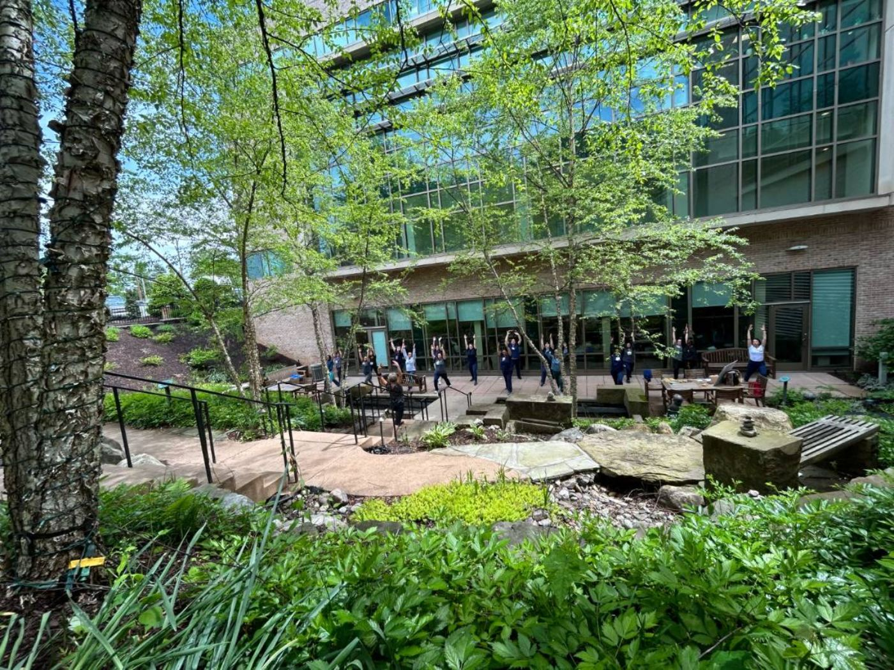
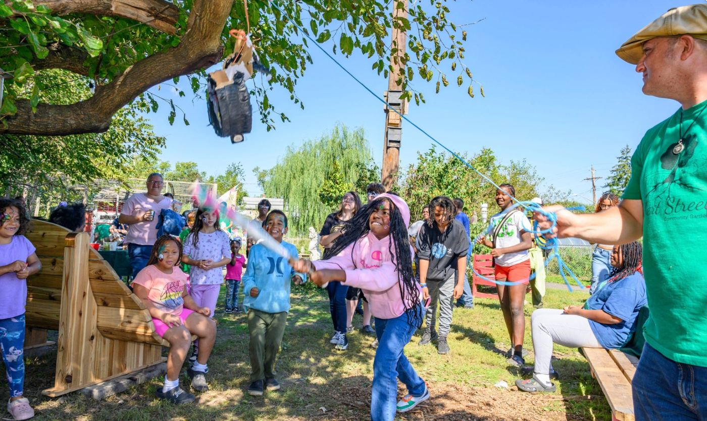

Throughout the year, Nature Sacred offers special opt-in programs that make it easy to bring new experiences to your Sacred Place. We find trusted partners, provide resources and promotional support, and cover program costs—you choose what works for your community and help bring it to life. No grant application. No grant reporting. Just opt in!
Explore the programs currently available to you and choose the ones that feel right for your Sacred Place and community.
Depending on the program, Nature Sacred may provide the instructor or vendor, materials, equipment, funding, and promotional resources you need.
You coordinate the date and details, invite your community, and host the experience at your Sacred Place.
Opt-in programs are a benefit of being part of the Firesoul™ Network. Nature Sacred covers the program costs so you can focus on creating a great experience for your community.
Yoga in the Garden helps Firesouls bring free, accessible wellness programming directly into their Sacred Places. These outdoor classes invite community members to slow down, move, connect with nature and one another, and experience their Sacred Place in a new way. Nature Sacred partners with Baltimore instructor Dee Satterfield and covers the cost, making it easy for you to bring yoga to your community.
Up to 8 yoga sessions at your Sacred Place per fall and spring season
Direct payment and coordination with the instructor
Promotional resources to help you spread the word
Host classes in your Sacred Place, moving indoors only when needed due to weather
Choose and coordinate dates with Dee
Share the classes through your community networks and invite people to participate
Include the Nature Sacred logo and "This program is supported by the Nature Sacred Firesoul Network" on promotional materials

Music in the Garden helps Firesouls bring free live music into their Sacred Places—creating joyful shared experiences that bring people together, welcome new visitors, and invite the community to experience the space in a new way. Nature Sacred partners with jazz musician and fellow Firesoul Todd Marcus to bring live concerts to Sacred Places in Baltimore and Washington, D.C. Space is limited.
Host the concert in or very near your Sacred Place
Coordinate the date and event details with Todd
Invite your community and help spread the word
Keep the Nature Sacred-supported event free and welcoming to the public
Include Nature Sacred recognition on promotional materials